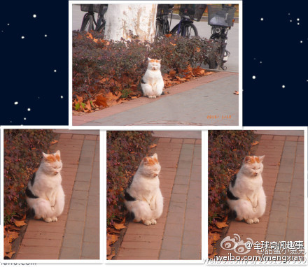

忽然觉得哈尔滨的这些流浪小猫咪是最可怜的。。。零下三十多度。。。就在外面流浪。。啊流浪。。。@全球奇闻趣事:我一直觉得这只猫咪长得很妩媚，发嗲酥麻，人走到旁边蹲下就会围过来。今早骑车路过，远远看到她在搓手！真的…真的是在搓手！把两只手放在肚子上，就像人一样，左右手换着搓。两只小脚冻得使劲并在一起。瞬间心里各种滋味。这个时候南京的室外温度是－2°C。她的小肉垫就放在冰冷的地上。by甜蜜小兔兔 

 ，不知道软不软[花心]
，不知道软不软[花心]